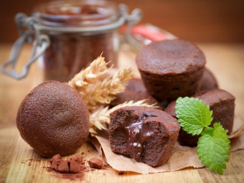
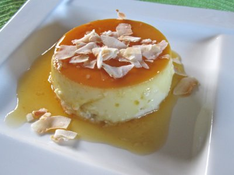
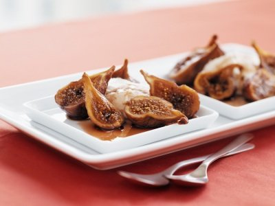

Mini Fondant de Chocolate
Esta receta de mini fondant de chocolate es ideal para preparar en fiestas infantiles o para cerrar con broche de oro una cena con tus amigos, prepáralos y sorpréndelos con esta deliciosa receta.

Ingredientes
- 90 gramos de mantequilla sin sal
- 1/2 taza de azúcar
- 1/4 de cucharada de sal
- 3 huevos
- 1/2 cucharada de esencia de vainilla
- 1 cucharada de harina
Preparación
- Precalentar el horno a 220ºC y engrasa con mantequilla 6 moldes pequeños.
- En una olla mediana derrite a baño maría el chocolate y la mantequilla.
- Agrega el azúcar y la sal y bate con un batidor globo.
- Agrega los huevos y la vainilla y continúa batiendo.
- Agrega la harina y termina de batir bien.
- Vierte la mezcla en los 6 moldes y colócalos en un recipiente algo hondo para que les puedas agregar un poco de agua mientras se hornean.
- Hierve dos tazas de agua y vierte en el recipiente en donde están los moldes.
- Hornea los pastelitos por 20 a 25 minutos o hasta que al insertar un palillo en las orillas este salga limpio pero al insertarlo en el medio salga un poco húmedo.
- Vierte los pastelitos en platos individuales y sirve.
Flan con Coco
Delicioso flan que se hace muy rápido, queda muy suave y es delicioso.Lo pueden comer las personas que con diabetes porque se hace con endulzante y crema light.

Ingredientes
- 1 lata de leche evaporada
- 1 coco pequeño
- 4 huevos
- 1 cucharadita de esencia de vainilla
- 2 cucharadas de agua
- 1 cucharada de jugo de limón
- 1/4 de taza de endulzante sin calorías
- 1 taza de leche en polvo deslactosada (opcional)
- 1 cucharadita de esencia de coco
- 2 cucharadas de azúcar morena
Preparación
- Pre calienta el horno a 180°C.
- Haz un caramelo dentro de la flanera mezclando el azúcar morena, agua y el limón.
- Licúa las leches y agrega poco a poco los demás ingredientes. Ralla el coco y agrega también el agua del mismo a la preparación.
- Vacía en la flanera y lleva al horno a baño María por espacio de 20 minutos o hasta que la punta de un cuchillo salga limpia al introducirla.
- Para el baño María puedes agregar 3/4 de agua en una charola y colocar la flanera encima.
Higos Rostizados con Salsa de Vino Tinto
Un postre muy fácil de preparar pero con un sabor delicioso para los paladares mas sofisticado.

Ingredientes
- 12 higos grandes
- 3/4 de taza de azúcar
- 3/4 de taza de vino tinto
- 4 cucharadas de mantequilla
- helados de vainilla
Preparación
- En una olla, ponga el azúcar, el vino tinto y la mantequilla.
- Corte los higos. Quites la punta y córtelos en cuatro.
- Ponga los higos con el vino y azúcar en la olla por 8 minutos a fuego medio.
- Saque los higos y póngalos en el horno a 200 grados durante 10-15 minutos hasta que se cocinen un poco y el vino se haga como miel.
- Sírvalos calientes en un plato un poco hondo con una bola de helado de vainilla.